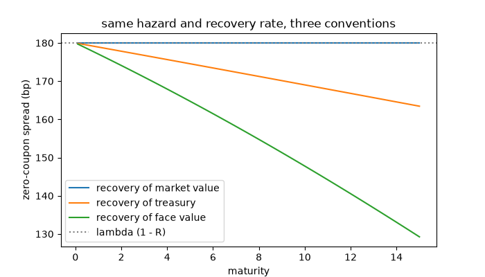
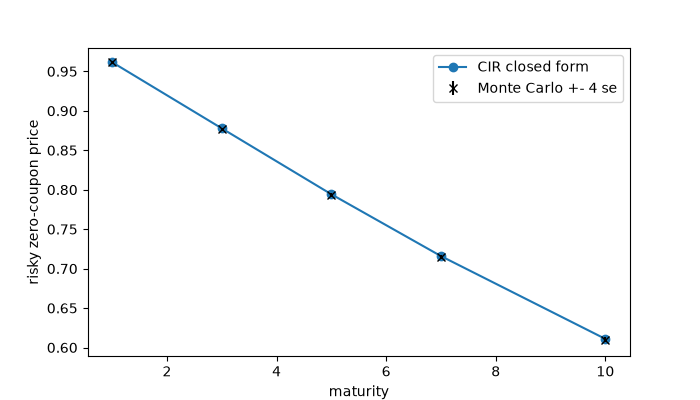

Note
Go to the end to download the full example code or to run this example in your browser via JupyterLite.
Duffie and Singleton: recovery of market value#
Duffie and Singleton (1999) assumed that at default a bond loses a fraction \(L\) of its own market value. Then defaultable claims are priced like riskless ones discounted at \(r + \lambda L\), so any short-rate machinery prices credit too. With a Cox-Ingersoll-Ross intensity the risky bond has the CIR closed form; here it is compared with a simulation, and the three recovery conventions are compared for a flat hazard.
import matplotlib.pyplot as plt
import numpy as np
from financialkit.credit import duffie_singleton_cir_zero, risky_zero_coupon
from financialkit.interest_rate_models import CIRModel
T = np.linspace(0.1, 15, 60)
r, h, R = 0.03, 0.03, 0.4
fig, ax = plt.subplots(figsize=(7, 4))
for conv, name in (("rmv", "recovery of market value"), ("rt", "recovery of treasury"), ("rfv", "recovery of face value")):
P = risky_zero_coupon(T, r, h, R, conv)
ax.plot(T, 1e4 * (-np.log(P) / T - r), label=name)
ax.axhline(1e4 * h * (1 - R), color="0.5", ls=":", label="lambda (1 - R)")
ax.set_xlabel("maturity")
ax.set_ylabel("zero-coupon spread (bp)")
ax.set_title("same hazard and recovery rate, three conventions")
ax.legend()

<matplotlib.legend.Legend object at 0x116492e40>
A stochastic intensity#
The intensity follows \(d\lambda = \kappa(\theta - \lambda)dt + \sigma\sqrt\lambda dW\). Monte Carlo averages \(e^{-\int (r + L\lambda)}\) over CIR paths.
lam0, kappa, theta, sig = 0.01, 0.4, 0.04, 0.12
mats = np.array([1.0, 3.0, 5.0, 7.0, 10.0])
closed = duffie_singleton_cir_zero(mats, r, lam0, kappa, theta, sig, R)
times, lam = CIRModel(lam0, kappa, theta, sig).simulate(10.0, 400, 4000, rng=1)
dt = times[1] - times[0]
cum = np.concatenate([np.zeros((lam.shape[0], 1)), np.cumsum(0.5 * (lam[:, 1:] + lam[:, :-1]) * dt, axis=1)], axis=1)
idx = np.searchsorted(times, mats - 1e-12)
mc = np.exp(-r * mats - (1 - R) * cum[:, idx])
fig, ax = plt.subplots(figsize=(7, 4))
ax.plot(mats, closed, "o-", label="CIR closed form")
ax.errorbar(mats, mc.mean(axis=0), yerr=4 * mc.std(axis=0) / np.sqrt(mc.shape[0]), fmt="x", color="k", label="Monte Carlo +- 4 se")
ax.set_xlabel("maturity")
ax.set_ylabel("risky zero-coupon price")
ax.legend()
plt.show()

Total running time of the script: (0 minutes 0.114 seconds)